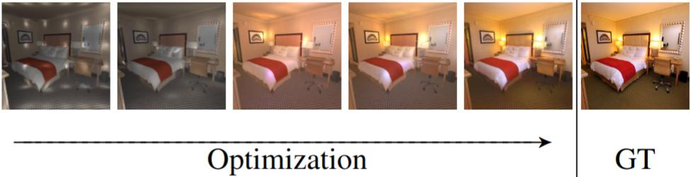

Method
Material Diffusion
 We train a conditional diffusion model to predict albedo and BRDF properties (roughness and metallic) given
a single input image. We adapt the learned prior of Stable Diffusion [28] by fine-tuning it on the synthetic InteriorVerse [40] dataset. (i)
First, we separately encode the ground-truth (GT) albedo and BRDF properties with a fixed encoder to obtain the material feature maps.
We also encode the conditioning image with a trainable encoder. (ii) We add noise to the material features and use our conditional diffusion
model to predicted the noise. (iii) The training is supervised with L2 loss between the original and predicted noise. (iv) Using the predicted
noise, the predicted material properties can be decoded separately.
We train a conditional diffusion model to predict albedo and BRDF properties (roughness and metallic) given
a single input image. We adapt the learned prior of Stable Diffusion [28] by fine-tuning it on the synthetic InteriorVerse [40] dataset. (i)
First, we separately encode the ground-truth (GT) albedo and BRDF properties with a fixed encoder to obtain the material feature maps.
We also encode the conditioning image with a trainable encoder. (ii) We add noise to the material features and use our conditional diffusion
model to predicted the noise. (iii) The training is supervised with L2 loss between the original and predicted noise. (iv) Using the predicted
noise, the predicted material properties can be decoded separately.
Lighting Optimization

Using our predicted material, we fit 48 point light sources and a global pre-integrated environment lighting to the scene using a reconstruction loss.